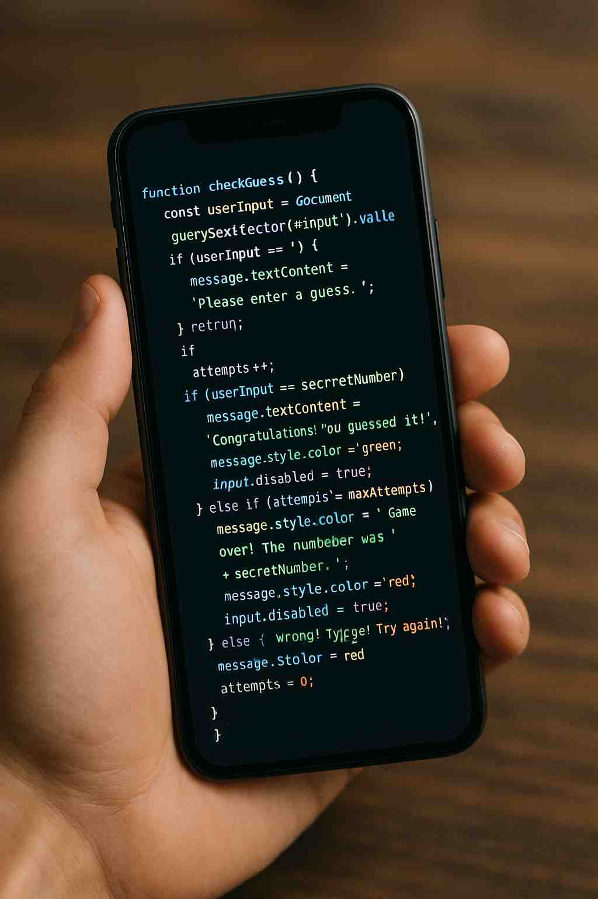
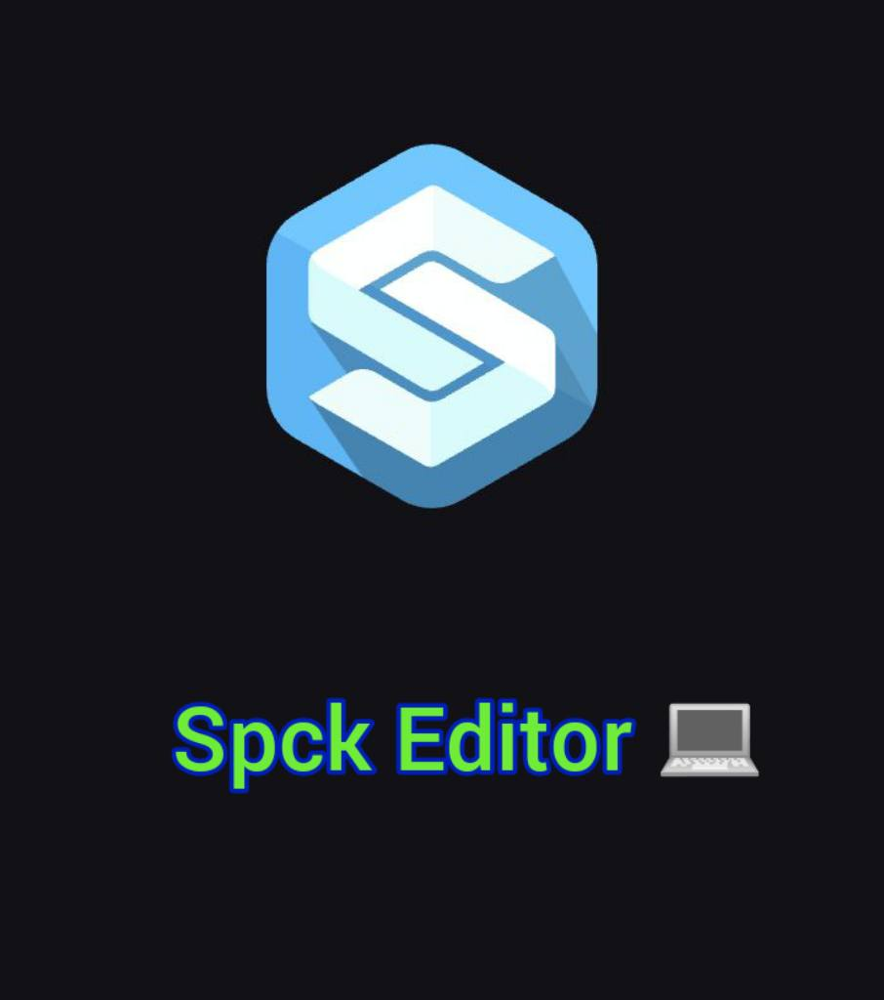
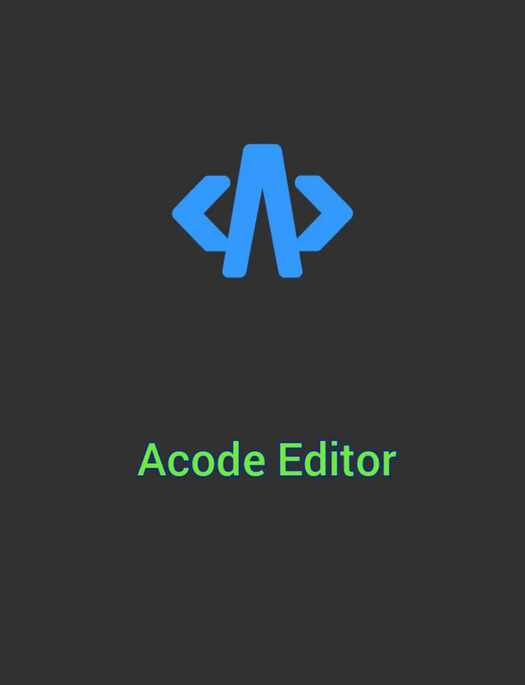
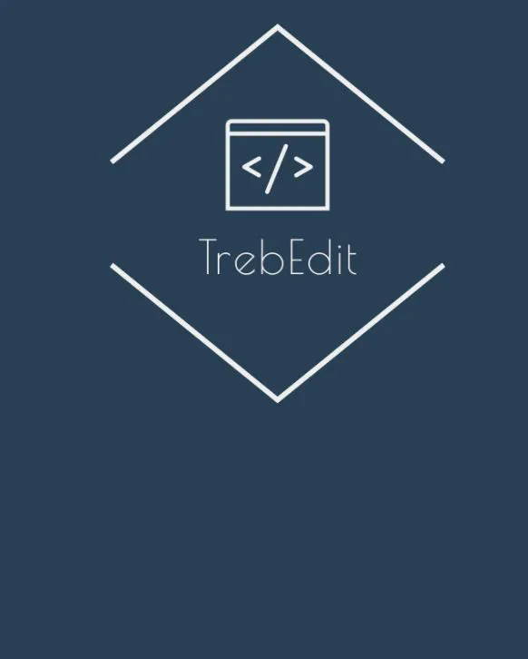
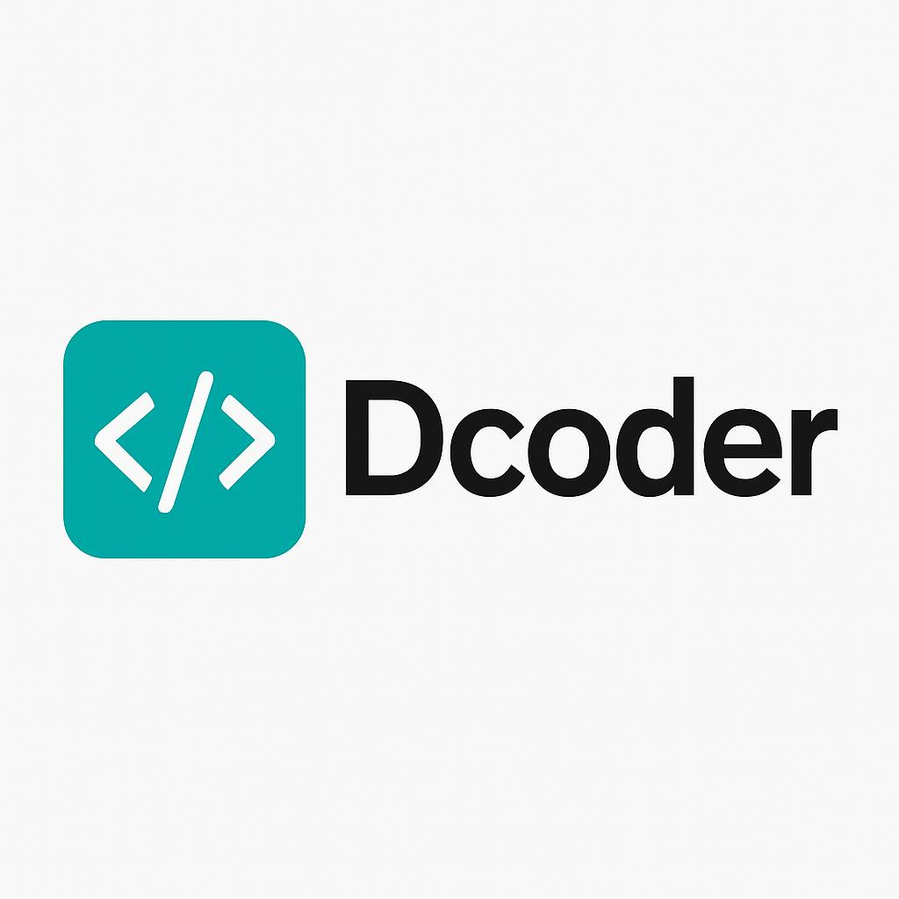

Coding on Phone: Best Code Editors for Mobile (2026)
I built this entire GrindHub website using just a smartphone. No laptop, no external keyboard — just passion and a few great mobile code editors. If you're thinking of starting your web dev journey from your phone in 2026, these are the editors you should definitely check out.
1. Spck Editor (⭐️⭐️⭐️⭐️⭐️ - My Favorite)

After trying a bunch of editors, Spck Editor has been the one I’ve stuck with. It's lightweight, clean, and makes it super easy to preview HTML/CSS/JS directly from the app. Plus, it supports tabs, file creation, and live preview. For someone coding without a PC, it truly feels like working in a mini VS Code.
2. Acode Editor (⭐️⭐️⭐️⭐️)

A powerful editor with support for syntax highlighting and even terminal access (on rooted devices). It's great for larger projects but sometimes felt a bit heavy on my phone. Still, if you're comfortable with it, it's a solid option.
3. TrebEdit (⭐️⭐️⭐️⭐️)

TrebEdit is another good mobile-friendly HTML editor. It has built-in browser support and works great for learning or editing small projects. It’s more beginner-oriented, but it helped me a lot in the early stages of my journey.
4. Dcoder (⭐️⭐️⭐️)

More like an all-in-one coding playground — it supports over 50 programming languages. While it’s not tailored specifically for front-end work like Spck or TrebEdit, it’s handy if you want to try out Python, Java, or C++ on the go.
5. Quoda (⭐️⭐️⭐️)
Quoda has good features like syntax highlighting, find and replace, and snippet support. It feels a bit outdated in 2026, but it’s still functional if you like a minimal setup.
My Recommendation
If you're serious about building websites with only a phone, I highly recommend starting with Spck Editor. It gave me the most seamless experience. I was able to manage folders, preview my site in real time, and structure everything just like I would on a laptop. But of course like always what works for me might not work for you, so keep trying untill you find what works for you.
So don’t wait for the “perfect gear.” If you’ve got a smartphone, you’ve got enough to build your dream site. Just find the tool that works for you and stick with it.